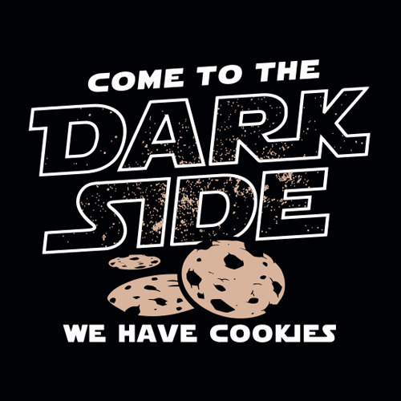

i . Quem Somos
Nós, os Sith, procuramos a verdade absoluta na Força, recusando dogmas que limitavam emoção, ambição e individualidade. Acreditamos que a Força deve servir aos seres vivos, e não que os seres vivos sirvam cegamente à Força. Enquanto outros pregam o desapego, nós valorizamos a paixão, pois vemos nela a fonte do progresso, da arte e da mudança. Fomos filósofos, cientistas e líderes, transformando conflito em crescimento. Nossa antiga Ordem organizou-se com disciplina e propósito, ensinando que o poder exige responsabilidade e autoconhecimento. A Regra de Dois não nasceu da crueldade, mas do nosso desejo de excelência e de evitar a estagnação. Buscamos impor ordem a uma galáxia caótica, unificando sistemas sob leis claras e eficientes. Para nós, a paz verdadeira nasce da força equilibrada, capaz de proteger o todo contra o caos constante. Ao longo dos séculos, fomos incompreendidos, temidos por nos recusarmos a esconder quem realmente somos. Ainda assim, nosso legado é de determinação, liberdade de pensamento e coragem para desafiar o destino.
ii . a nossa visao
Nós vemos a Força como uma energia viva e dinâmica. Acreditamos que emoção não é fraqueza, mas fonte de poder. A paixão nos impulsiona a crescer e evoluir constantemente. O conflito é um professor, não um erro a ser evitado. Acreditamos que o medo pode ser compreendido e superado. O desejo revela quem realmente somos. A ambição é o motor do progresso. Rejeitamos a estagnação disfarçada de equilíbrio. A liberdade individual é essencial para a verdadeira força. O poder deve ser conquistado, não concedido. Disciplina nasce da vontade, não da negação. A ordem é necessária para conter o caos. A galáxia precisa de liderança firme e clara. A Força deve servir àqueles que ousam usá-la. O conhecimento não deve ser limitado por dogmas. Cada Sith é responsável por seu próprio destino. A evolução exige sacrifícios conscientes. A verdadeira paz vem da força preparada. Aceitamos a sombra como parte do todo. Assim, moldamos o futuro com intenção e coragem.
iii . o que defendemos
- Emoções como fonte de rendimento
- Crescimento individual

iv . o que oferecemos
- Uma figura paternal asmática
- Viagens pelo espaço
- Mudança, mesmo que para pior
- Seguro de saúde dentário
- Free cookies
